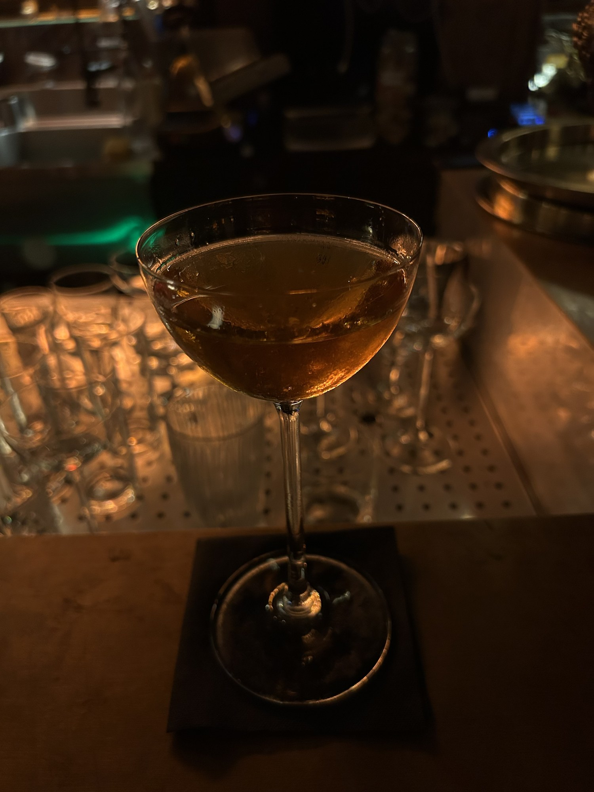

Sophisticated. A velvety feel on the tongue. Dry and smoky with a pop of apple and beetroot flavor. The sage and rosemary provide a great herbal undertone.
This felt like a unique use of Mezcal, and one I really enjoyed. I really couldn’t get over the color of this drink. Crystal clear, vibrant, incredibly sexy color.
Would be a great drink to accompany a steak dinner while on a date.

“Not all dealer’s choices work in your favor.”
What I drank / 02
Mezcal Manhattan
Ingredients
Mezcal · Sweet Vermouth · Angostura Bitters
The profile
Coupe glass, no garnish.
My thoughts
After drinking the Nocturne, I wanted to keep with Mezcal. With no other options on the menu, I asked the bartender to surprise me, and this was what he made.
I do enjoy a Manhattan, but it is no doubt better with rye/whisky. With no other ingredients present, I don’t love the pairing of Mezcal and Sweet Vermouth. Of course, very spirit-forward.
Not all dealer’s choices work in your favor.
The Space
When you walk in, you are greeted with a long bar with plenty of seats, and further in, a lofted area with couches and chairs. Small bites/snacks are also served here. Wood, exposed beams, a hybrid of rustic and upscale.
I, of course, had a seat at the bar where I was able to watch all the drinks being made. Unfortunately, the bartender seemed consumed in his work and wasn’t very chatty. Something I have come across more often in Europe than in the US. I think it has to do with bar culture, but also tipping culture.
With that said, the atmosphere was good and the drinks pretty tasty.
My Verdict
6.6 / 10Taste
6.2 / 10Atmosphere
Taste reflects what I drank. Atmosphere reflects the bar experience.